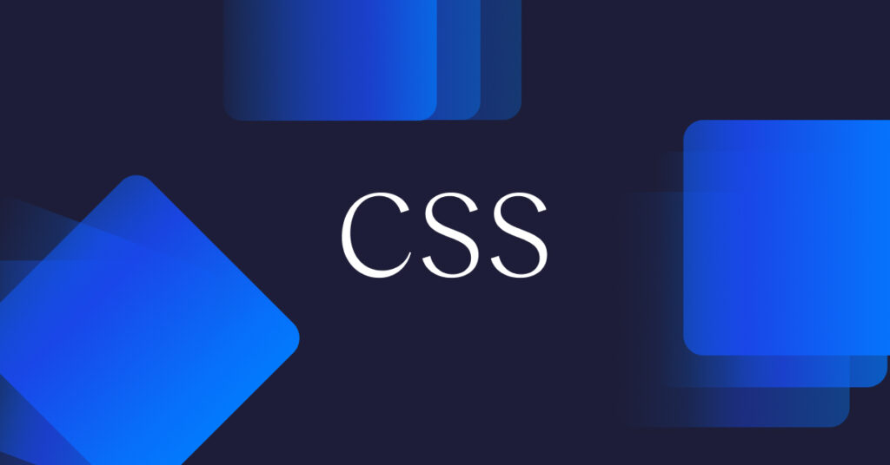

Antes de comenzar, debes tener claro un concepto clave: una página web es realmente un documento de texto. En dicho documento se escribe código HTML, con el que se que crea el contenido de una web. Por otro lado, existe el código CSS, que unido al código HTML permite darle forma, color, posición (y otras características visuales) a un documento web.
En resumen, se trata de un «idioma» o lenguaje, como podría ser el inglés o el alemán, que los navegadores web como Chrome o Firefox conocen y pueden entender. Nuestro objetivo como diseñadores y programadores web es precisamente ese: aprender el idioma e indicarle al navegador lo que debe hacer.
Las siglas CSS (Cascading Style Sheets) significan «Hojas de estilo en cascada» y parten de un concepto simple pero muy potente: aplicar estilos (colores, formas, márgenes, etc...) a uno o varios documentos (generalmente documentos HTML, páginas webs) de forma automática y masiva.
Se le denomina estilos en cascada porque se lee, procesa y aplica el código desde arriba hacia abajo (siguiendo patrones como herencia o cascada que trataremos más adelante) y en el caso de existir ambigüedad (código que se contradice), se siguen una serie de normas para resolver dicha ambigüedad.
Al empezar, siempre generalizamos mencionando que tenemos varios documentos HTML, pero sólo un documento CSS. En cada documento HTML enlazamos ese único documento CSS, de modo que si hacemos cambios en él, afecta a todos los documentos HTML relacionados. Esto es mucho más práctico que tener el CSS en cada uno de esos documentos, y tener que cambiarlos en cada uno de ellos.
